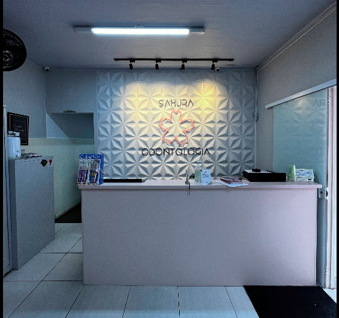

ODONTOLOGIA INTEGRADA · POÁ, SP
Cuidado que faz florescer o seu sorriso.
Uma clínica de odontologia para diferentes momentos e necessidades, com atenção ao que importa: você e a sua saúde bucal.
Um sorriso por inteiro.

e inspira confiança.
ATENÇÃO EM CADA DETALHE
ODONTOLOGIA PARA TODAS AS FASES
POÁ · SÃO PAULO
CUIDADO ODONTOLÓGICO
O que você procura
para o seu sorriso?
Encontre o cuidado que combina com a sua necessidade. Nossa proposta é tornar a informação mais clara para você dar o próximo passo.
Relação preliminar de áreas para apresentação. A clínica deverá confirmar quais tratamentos oferece atualmente antes da publicação.
A IDENTIDADE SAKURA
A atenção está
nos detalhes.
A flor que dá nome à clínica encontra formas, luz e geometria em um espaço próprio. Essa linguagem inspirou uma experiência digital que valoriza a identidade da Sakura sem perder clareza e simplicidade.
Conheça a clínicaUM OLHAR PRÓXIMO
Cada sorriso tem
sua própria história.
A primeira conversa é o começo de um cuidado pensado para a sua necessidade. Entre em contato com a equipe da Sakura para conhecer as opções de atendimento.
VAMOS CONVERSAR?
Seu próximo passo
começa aqui.
Fale com a Sakura para tirar dúvidas, conhecer os tratamentos e consultar as possibilidades de atendimento.
Poá · São Paulo
WhatsApp preparado no código. O link será ativado após confirmação do número oficial da clínica. Telefone identificado na fachada: (11) 4634-3413.